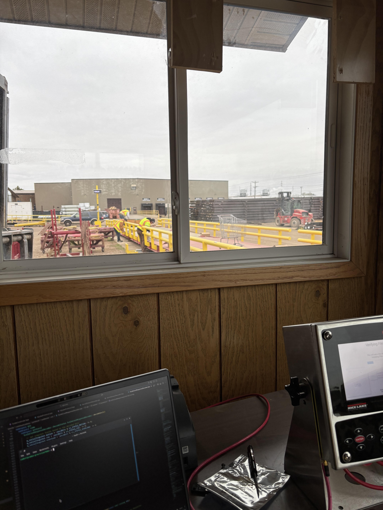

Embedded Software Engineer — Rice Lake Weighing Systems
June 2025 – Present | Rice Lake, WI
Develop firmware for weighing indicators in C++ and C, building new features and resolving both
major and minor bugs across the product line.
Design and build embedded frontend UIs using HTML, CSS/Less, and JavaScript for in-device displays.
Write and maintain comprehensive unit tests alongside firmware development to ensure system reliability.
Debug low-level communication using logic analyzers across SPI, RS-232, and RS-485 serial interfaces.
Work on integrating digital load cells and custom communication protocols.

Field-testing a 1280 indicator software feature on a RLWS Survival truck scale
Part Time Student — Product Engineering Co-op — John Deere
Sep 2022 – May 2025 | Ames, IA
Developed embedded software using C++, object-oriented programming, and Qt Creator to enhance the
UI/UX experience on Gen4/5 in-cab displays, improving field boundary adjustments, diagnostics,
CAN message parsers, and resolving critical data miscalculations, UI spacing, and text issues.
Conducted unit testing with GTest, automated testing with Jenkins, and UX tests using Python to
ensure software reliability.
Worked on an Agile Scrum team, performing code reviews and participating in daily standup meetings.
Utilized a Linux environment for development, version control across multiple repositories, and
running simulations.